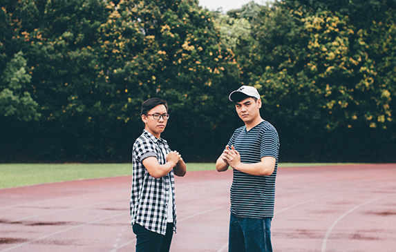
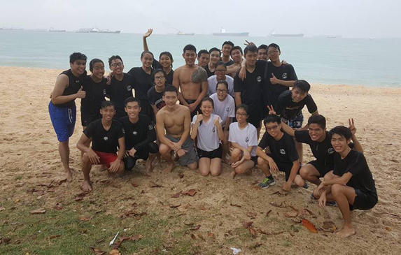

When I was Primary 4, I joined the 21st Junior Boys' Brigade in Geylang Methodist School (Primary).I had lots of fun in the Junior section, and when I went to St. Andrew's Secondary, I continued on to the 7th company.
In the 4 years of my secondary school, I really learnt alot from my seniors and officers and grew very close to my batchmates - thanks to the many training camps we were through together. I learnt alot about leadership and was given responsibilities such as Games I/C, Squad Leader and have been a committee member of many events and even chaired my own event. I am really thankful for the opportunities I had to grow and to learn in my four years.
DMIT CLUB. (2016 - now)

One of the events that the Baristas held was the DMIT Checkered vs Stripes Outfit of the Day (OOTD).
After attending DMIT Club's Freshman Orientation Camp (FOC) 'Aftermath' before my new poly life started, I really grew to love the people and the seniors there (even though I could only go for two out of four of the camp days). I then became very committed to the club, regularly going to the club room (mainly to do my schoolwork) and to their events. This gave me the opportunity to really bond with my seniors and batchmates.
When they were interviewing for Year 1 Subcommittee members, I decided to join to contribute back to the club. I was then given a position under Publications, which was mainly managing social media to announce upcoming events. This gave me the opportunity to learn many new things such as Adobe Photoshop.
Being in the club also gave me the opportunity to join Organising Committees and help out other events. Currently, I am in the design team for Escape Room, which will be held in January 2017. I am also part of the next year's FOC camp planning committee. I am very grateful for the opportunities I had through DMIT Club and for the wonderful people there.
KRAV MAGA. (2016 - now)

A group picture of the krav family after a very special beach training.
When I joined Singapore Polytechnic, I initially wanted to join football as I loved it and wanted to join a CCA that can improve my fitness. However, I did not pass the try outs. Hence, I decided to take Krav Maga, which was a very interesting "martial art" (it's not really a martial art, it's more of a self-defense class).
At Krav Maga, I made quite good friends with some of my batchmates as well as the seniors in the committee. I found myself improving my techniques and loving the classes that were held every Tuesdays and Thursdays. I am now a Practitioner 1 after I took my grading in January.